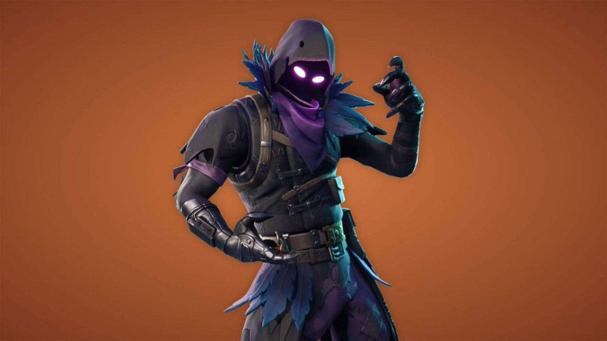
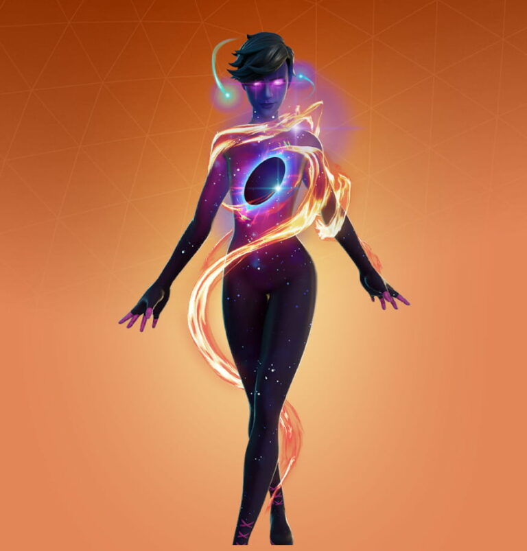
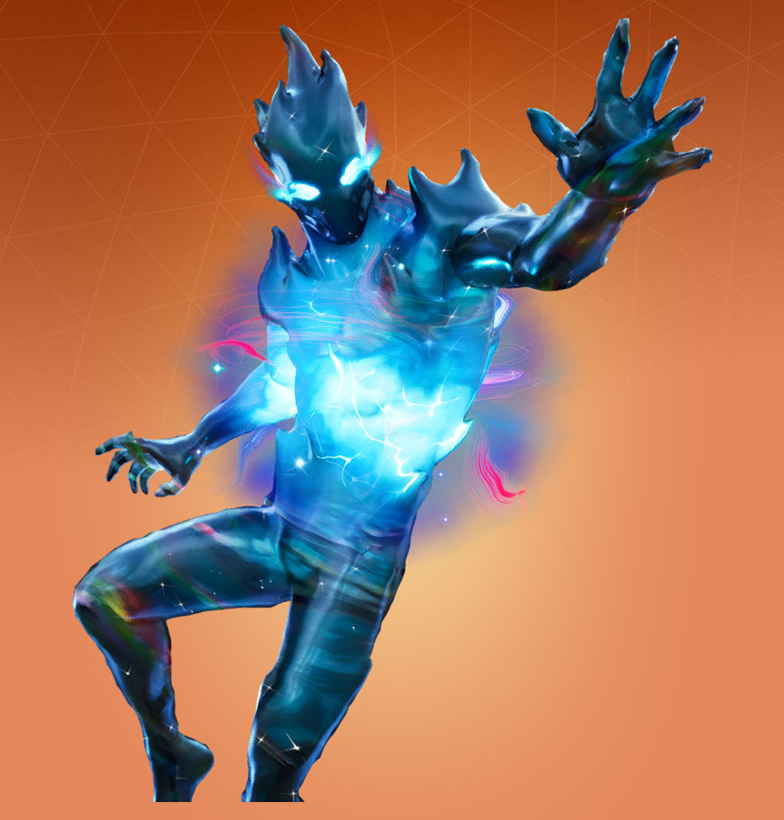
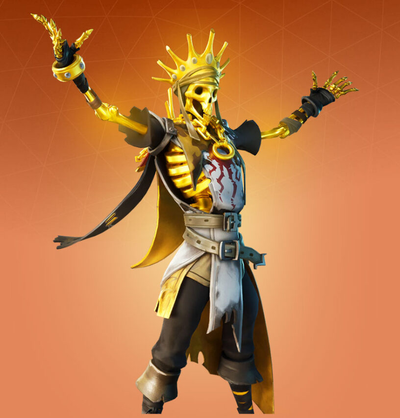
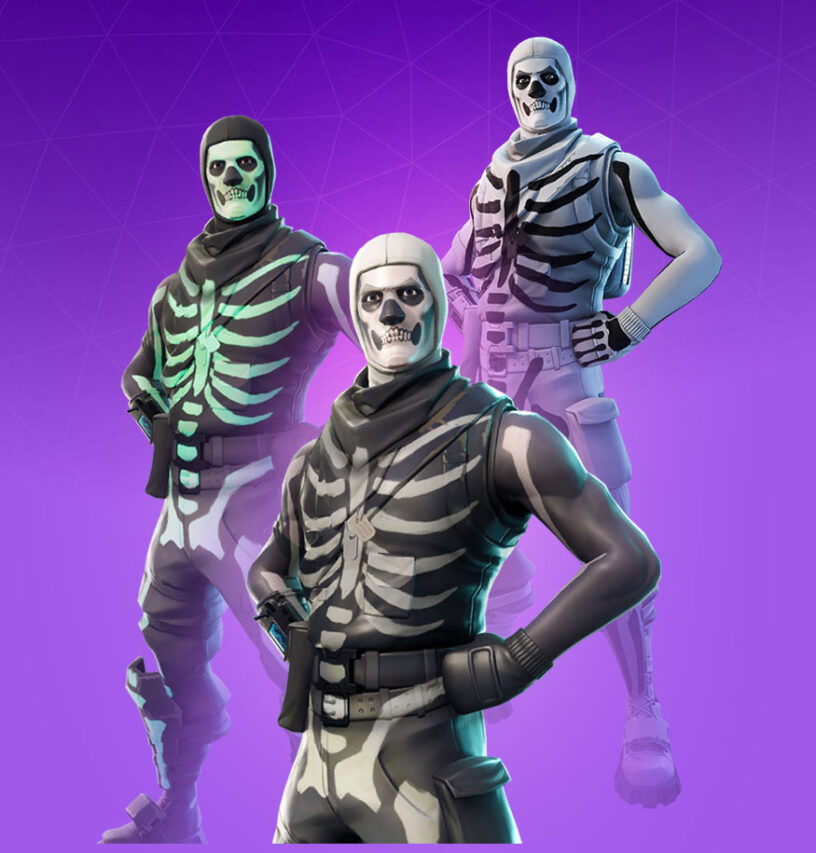
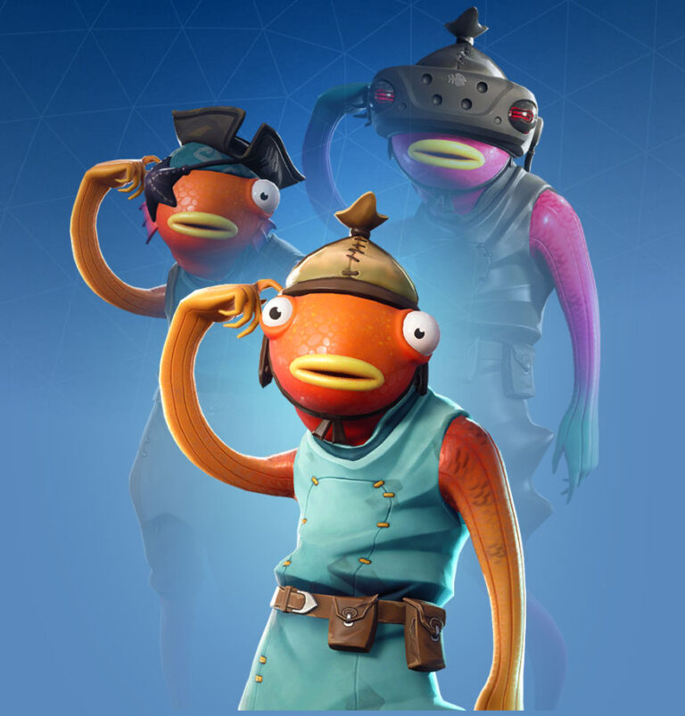

ТОП 10 ЛУЧШИХ СКИНОВ В FORTNITE
_______________________________________________________________________________________________
1 МЕСТО: RAVEN

Raven в переводе на русский- Ворон, в Fortnite же он легендарный скин.
Цена: 2000V-bucks
Описание: На нём фиолетовые штаны, тёмная водолазка, фиолетовый шарф и чёрный капюшон, чёрный плащ и фиолетовые неоновые глаза.
_______________________________________________________________________________________________
2 МЕСТО: Galaxy Grappler

Galaxy Grappler в переводе на русский- Властительница Galaxy, в Fortnite же она легендарный скин.
Цена: 2000V-bucks
Описание: Можно сказать, что это просто женщина вселенная тоесть Galaxy, на ней тёмные волосы и неоновые глаза.
_______________________________________________________________________________________________
3 МЕСТО: Zero

Зеро это существо из чёрной дыры, которая повисла над фортнайтом после окончания 10 сезона.
Цена: 2000V-bucks
Описание: Просто чёрная дыра
_______________________________________________________________________________________________
4 МЕСТО: ORO

ORO в переводе на русский- Аурум, в Fortnite же он легендарный скин.
Цена: 2000V-bucks
Описание: Золотой скелет, которых просто ОБОЖАЕТ сокровища.
_______________________________________________________________________________________________
5 МЕСТО: Skull Trooper

Skull Trooper в переводе на русский- Скелет солдат, это хэллоуинский скин, в Fortnite же он эпический скин.
Цена: 1500V-bucks
Описание: Он одет в черный тематический костюм с белыми зарисовками, а на лице его грим. Мои догадки что это загримерованный Джоунси.
_______________________________________________________________________________________________
6 МЕСТО: Fishstick

Fishstick в переводе на русский- Карась, прикольный скин. В Fortnite же он редкий скин.
Цена: 1200V-bucks
Описание: Карась, носит на себе странные голубые шорты, майку, коричневый пояс и шапочку. У самого Карася, косые глаза.
_______________________________________________________________________________________________
На этом сайте пока, 6 скинов. Но со временем мы добавим ещё 4 места.